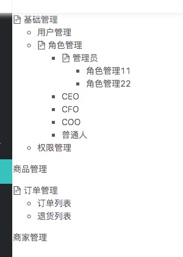

谈谈Vue中的递归组件
组件是可以在它们自己的模板中调用自身的。不过它们只能通过 name 选项来做这件事：
name:'unique-name-of-my-component'
一般项目中需要用递归组件生成目录树，废话不多说，咱上个例子吧
新建一个sidebar 控件
<template> <div class="main--class"> <ul v-for = '(modelItem, $index) in data' :key='$index' > <tree-menu :model='modelItem'/> </ul> </div> </template> <script> import TreeMenu from './treeMenu.vue' var demoData = [ { 'id': '1', 'menuName': '基础管理', 'menuCode': '10', 'children': [ { 'menuName': '用户管理', 'menuCode': '11' }, { 'menuName': '角色管理', 'menuCode': '12', 'children': [ { 'menuName': '管理员', 'menuCode': '121', 'children':[ { 'menuName': '角色管理11', 'menuCode': '124', }, { 'menuName': '角色管理22', 'menuCode': '125', } ] }, { 'menuName': 'CEO', 'menuCode': '122' }, { 'menuName': 'CFO', 'menuCode': '123' }, { 'menuName': 'COO', 'menuCode': '124' }, { 'menuName': '普通人', 'menuCode': '124' } ] }, { 'menuName': '权限管理', 'menuCode': '13' } ] }, { 'id': '2', 'menuName': '商品管理', 'menuCode': '' }, { 'id': '3', 'menuName': '订单管理', 'menuCode': '30', 'children': [ { 'menuName': '订单列表', 'menuCode': '31' }, { 'menuName': '退货列表', 'menuCode': '32', 'children': [] } ] }, { 'id': '4', 'menuName': '商家管理', 'menuCode': '', 'children': [] } ]; export default { name: 'demo', data() { return { data:demoData } }, components:{ TreeMenu } } </script>组件 treeMenu
<template>
<li>
<span v-if='hasChild'><a-icon type="file-text" /></span>
<span>{{model.menuName}}</span>
<ul v-if='hasChild' style='margin-left:20px'>
<tree-menu
style='margin-left:20px'
v-for="(item,$index) in model.children"
:model="item"
:key="$index">
</tree-menu>
</ul>
</li>
</template>
<script>
export default {
name:'TreeMenu',
props: {
model: {
required: true,
type: Object
}
},
computed:{
hasChild(){
return this.model.children && this.model.children.length
}
}
}
</script>
ensp;
#注意
这个treeMenu组件必须有name,因为没有name这个属性会造成控件自身不能调用自身，自身调用的时候最好有绑定key，
因为这个key是唯一标时，对于vue更新控件比较好，除非控件非常简单就不用key
另外一个需要注意就是递归组件时候，需要有一个条件来终止递归，在这里使用 v-for隐形条件终止递归，props这个属性其实主要
传递父控件的数据的参数，具体用法可以参详vue的官方文档
- 最终结果如下图 